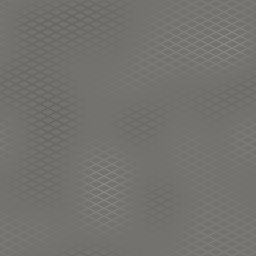
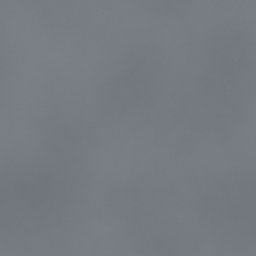

← All scout pages · Public copy, pages as of 2026-10-16 23:41. A Poly Haven prospect shows our own copy of its CC0 colour map, flat and unlit (Poly Haven’s previews are not CC0; its page has the lit one). The offline 3D viewer stays on the owner’s machine.
Metal scout — CC0 prospects
Every entry of Metal in the proposed surface list of 16 Oct (docs/plans/SURFACE_LIST-proposed-2026-10-16.md, d770ab5c) that the material grid uses (HIT) or proposes (GAP), less the entries already approved or under review, with up to three CC0 prospects from Poly Haven and ambientCG. Real photos are preferred; a generated (computer-made) set is listed only when neither library has a photo of that look, and it is marked. Rows with nothing real say so, with the likely route. Built 2026-10-16 by scout metal (the 16 Oct row set). Read-only: nothing in the game was changed and nothing was downloaded at full size.
Sizes:Real size is the width one copy of the picture covers in the real world, as the library gives it. 2K size is the download at 2K: what the project's pull (tools/surface_photos.py) would fetch — ambientCG's 2K-PNG zip, Poly Haven's 2K PNG maps — and the smaller JPG figure beside it.
3D: an ambientCG prospect's picture opens ambientCG's own 3D preview; a Poly Haven prospect's page has its 3D preview. Our offline viewer of the game's own maps is not on this public copy.
8rows scouted (8 the grid uses, 0 it proposes; 26 entries in Metal)
8with at least one prospect
4with a real photo of the look
3generated only (route noted)
1no real match (route noted)
Left out (18)
Steel plate, clean — [UNUSED?] in the list (no grid cell uses it)
Steel plate, brushed — [UNUSED?] in the list (no grid cell uses it)
Riveted plate — [UNUSED?] in the list (no grid cell uses it)
Diamond / checker plate — approved
Corrugated steel wall — under review (pick corrugated_iron_03, pulled 2026-10-10)
Corrugated steel, rusted — [UNUSED?] in the list (no grid cell uses it)
Galvanised sheet — under review (pick ambientcg:Metal014, pulled 2026-10-10)
Now in the game code-drawn · status original drawn by code: dino_game_rnd/surface_gen/gen_paint2.py Thumbnail: the game's drawn picture Grid: HIT as “painted steel”, 14 cells (style, room, player)
blue_metal_plate is a near-match: scratched blue-painted steel plate, our colour. green_metal_rust is green paint with light rust; rusty_metal_02 is pale grey paint flaking over a lot of rust, far more worn than ours.
Now in the game code-drawn · status original drawn by code: dino_game_rnd/surface_gen/gen_weld3.py Thumbnail: the game's drawn picture Grid: HIT as “welded steel plate”, 12 cells (room, player)
Photos of steel plates joined at seams (metal_plate_02) and a painted plate with bars welded on (rusty_metal_grid). No photo shows a clean weld bead like our drawing's.
Now in the game generated-allowed · OUTLIER · status original Metal 012 by ambientCG (ambientCG) — page Thumbnail: photo-materials picture (what the game shows with Photo materials on) Grid: HIT as “stainless sheet”, 24 cells (style, room)
Likely route: Nothing real. Keep the allowed generated set, or a Material Maker build (brushed streak noise and panel seams) if a home-made look is wanted. No photo route.
No real-photo stainless in either library: ambientCG's only metal photos are a dark aged steel (Metal063), tread plate, walkways and drain covers, and every Poly Haven metal is painted, rusted, corrugated or tread plate. The game already wears a generated set here (ambientCG Metal012, allowed by the owner on 8 Oct); these are other generated stainless-type sets.
The picture opens our 3D viewer — downloaded, not in the game yet (on the owner’s machine only)
04
Expanded metal mesh
metal_expanded_mesh

Now in the game code-drawn · status original drawn by code: dino_game_rnd/surface_gen/gen_see.py Thumbnail: the game's drawn picture Grid: HIT as “expanded metal mesh”, 1 cell (room)
Likely route: Nothing real. Material Maker is the likely route: a diamond lattice with a cut-out mask is a simple procedural build and gives true expanded-metal diamonds, which the generated walkways do not.
No real-photo expanded mesh. ambientCG's generated slotted walkways are the nearest; their openings are rounded slots, not the diamond openings of expanded metal.
Now in the game code-drawn · status original drawn by code: dino_game_rnd/surface_gen/gen_see.py Thumbnail: the game's drawn picture Grid: HIT as “chain link”, 1 cell (room)
Likely route: Nothing real. The generated sets fit well; Material Maker could also tile the woven diamond with a cut-out mask. A photo would have to be captured.
No photo of chain-link fence in either library. Generated see-through chain-link fences instead (Fence001 is green-coated).
Now in the game code-drawn · status original drawn by code: dino_game_rnd/surface_gen/gen_see.py Thumbnail: the game's drawn picture Grid: HIT as “bar grating”, 4 cells (room, tunnel)
Likely route: No real repeating grating. The generated grid, or Material Maker (load bars plus cross rods with a cut-out mask).
No photo of a repeating bar-grating floor. Both photos are single drain covers cut out as stickers. MetalWalkway001 is a generated bar grid that does repeat.
Now in the game code-drawn · status original drawn by code: dino_game_rnd/surface_gen/gen_metal_industrial_paint_safety_yellow.py Thumbnail: the game's drawn picture Grid: HIT as “safety yellow paint”, 17 cells (style, room)
rusty_metal_03 is yellow-painted steel, rusted much more heavily than the current look. blue_metal_plate is clean painted plate that would need its colour changing to yellow.
The picture opens our 3D viewer — downloaded, not in the game yet (on the owner’s machine only)
08
Industrial paint, machine grey
metal_industrial_paint_machine_grey

Now in the game code-drawn · status original drawn by code: dino_game_rnd/surface_gen/gen_metal_industrial_paint_machine_grey.py Thumbnail: the game's drawn picture Grid: HIT as “machine grey paint”, 20 cells (style, room, player)
No clean grey painted-steel photo. rusty_metal_02 is pale grey paint, but flaking over a lot of rust; blue_metal_plate and green_metal_rust are cleaner painted plate that would need recolouring to grey.